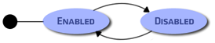
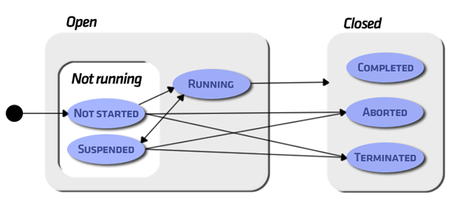
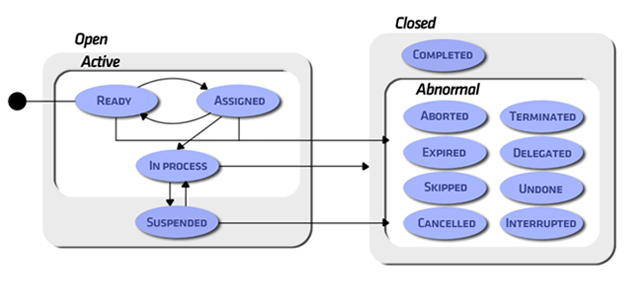

IntroductionAn important component for the Workflow engine working performance is a states machine where processes, process instances and workitems change their state according to internal or external events or specific control decisions internally taken by the Workflow engine. Process Definition StatesA process definition can be enabled or disabled, which determines whether new process instances based on this definition can be created or not.
The following figure shows the process definition states chart.

Enabled: If the Process Definition is enabled new Process Instances can be created.
Disabled: If the Process Definition is disabled, it is not possible to create new Process Instances.
Process Instance StatesThe following figure shows the process instances states chart.  open
When a process instance is created, it takes the open state. This is a (super)state of all the possible states that a process instance would be able to take while executed by the Workflow engine. Once the process instance execution terminates, it takes the closed state.
open.notRunning
A process instance is in the open.notRunning state when it is not participating actively in the Workflow process execution. If it is in the open.notRunning state, it can change to the open.running state or to the closed.aborted or closed.terminated states.
open.notRunning.notStarted
A process instance is in the notStarted (sub)state when it has not started to participate actively in the Workflow process execution.
E.g.: when the &ProcessDefinition.CreateInstance() method is executed, the process instance created takes the open.notRunning.notStarted state.
open.notRunning.suspended
When a process instance execution is suspended, it takes the suspended (sub)state. Besides, this state (suspended) is inherited by all the active objects (workitems, sub-processes) belonging to the suspended process instance. I.e.: while the process instance remains in this state, no other Workflow object contained in the instance can be actively participating in the Workflow process execution.
E.g.: when the &ProcessInstance.Suspend() method is executed, the process instance takes the open.notRunning.suspended state.
open.running
A process instance takes the open.running state when it starts participating actively in the Workflow process execution. If it is in the open.running state, it can change to the suspended state or the closed state (and therefore, to any of its(sub)states, i.e.: aborted, terminated or completed).
E.g.: When the &ProcessInstance.Start() method is executed, the process instance takes the open.running state.
closed
A process instance takes the closed state when it does no longer participate in the Workflow process execution.
closed.completed
When a process instance terminates its execution normally, it takes the closed.completed state. It is assumed that all Workflow objects belonging to the process instance have terminated.
There is no method in the ProcessInstance object that allows taking the closed.completed state. This state can only be reached by the normal termination of the instance and not by an external event or action.
closed.terminated
The execution of a process instance can be terminated before the normal execution terminates, taking the closed.terminated state. At present, this state is used to represent the occurrence of the process instance deadline (*). I.e.: when the process instance deadline occurs, it takes the closed.terminated state. Besides, this state is inherited by all the active objects (workitems, sub-processes) belonging to the aborted process instance.
(*) The reason for using the terminated state to model the deadline occurrence instead of using the expired state (as in the workitems), is for keeping the compatibility with the states machine suggested by the WFMC for the process instances.
closed.aborted
A process instance can be aborted before its normal execution terminates (or even before its execution starts), taking the closed.aborted state. Besides, this state is inherited by all the active objects (workitems, sub-processes) belonging to the aborted process instance.
E.g.: when the &ProcessInstance.Abort() method is executed, the process instance takes the closed.aborted state.
States TransitionWhen a Process Instance is created, it takes the initial state; i.e.: open.notRunning.notStarted. The most common transition in this case (originated in the notStarted state) is to the open.running state, which occurs when we do the Start of the process instance. Other transitions (also shared by the
suspended state) are to the closed.terminated or closed.aborted state. Transitions from the running state to the notRunning state can only be directed to the suspended (sub)state. When the process instance execution is terminated, it takes the closed (super)state. Depending on the way it terminates, the (sub)states can be completed, terminated or aborted. The completed state can only be reached from the running state, since it represents the normal termination of the process instance. The terminated state is reached when the process instance deadline occurs. Finally, the aborted state occurs when the process instance execution aborts.
The closed sate is final; i.e.: there are no transitions from the closed state to the open state.
Workitems StatesThe following figure shows the workitems states chart.  open
When a workitem is created, it takes the open state. This is a (super)state of all the possible states that the workitem would take while it has not been processed.
open.active
When a workitem takes the open.active state, it is added to the worklist of all the users with rights to process this workitem (for this, the workflow engine is based on the users’ functional roles and restrictions). Besides, while the workitem is in this state, users can execute specific actions on it (take, release, execute, next) depending on the (sub)state that the workitem has taken.
There is a transition from the open.active (or any of the (sub)states: ready, assigned, in_process), to the open.suspended state. This transition is taken when the process instance the workitem belongs to is suspended.
open.active.ready
A workitem is in the open.active.ready state when it has been created but has not been assigned any user yet. The most common transition from this state is to the open.active.assigned state, which occurs when a user takes the workitem (take action).
open.active.assigned
When a user assigns himself a workitem (take action, only allowed when the workitem is in the open.active.ready state), it takes the open.active.assigned state. In this moment, the Workflow engine removes the workitem from the worklist of the other users that shared it. There are transitions from this state to the open.active.ready state (release action), to the open.active.in_process state (execute action) and to the closed.abnormal state (on account of an event or an internal action of the Workflow engine).
open.active.in_process
When the user that has the workitem assigned starts processing it (executes the associate application), the workitem takes the open.active.in_process state. The workitem remains in this state (independently of the number of times that the user executes the application) until the user completes the workitem (next action), and causes the transition to the closed.completed state. Another possibility is the transition to the closed.abnormal state, either because the process instance to which the workitem belongs to has aborted (transition to the closed.abnormal.aborted state) or due to events or internal actions taken by the Workflow engine (transition to the closed.abnormal.expired, closed.abnormal.left_aside or closed.abnormal.terminated states).
open.suspended
A workitem takes the open.suspended state when the process instance it belongs to is suspended. Once the process instance execution is resumed, the workitem returns to its original state (transition to the open.active state). It may be also possible that some internal or external event occurs, causing the abnormal termination of the workitem while it is in the open.suspended state (transition to the closed.abnormal state).
closed
A workitem takes the closed state when it “terminates” its process. This termination may be caused by the normal termination of the workitem process, by an external event or by an internal action taken by the Workflow engine. The closed state is the final state; i.e.: there are no transition from this state to other states.
closed.completed
When a workitem process terminates successfully, (the user processes the workitem and then completes it (next action), the workitem takes the closed.completed state.
closed.abnormal
A workitem takes the closed.abnormal state when it terminates abnormally. This abnormality, can be caused by an event or internal action taken by the Workflow engine.
closed.abnormal.terminated
A workitem takes the closed.abnormal.terminated state when the deadline assigned to the process instance the workitem belongs to expires. Please note that the existence of the expired and terminated states allows differentiating the occurrence of the workitem deadline from the occurrence of the deadline of the process instance the workitem belongs to.
closed.abnormal.aborted
A workitem takes the closed.abnormal.aborted status when the execution of the process instance the workitem belongs to aborts.
closed.abnormal.expired
A workitem takes the closed.abnormal.expired state when the deadline assigned to the workitem expires.
closed.abnormal.delegated
A workitem takes the closed.abnormal.delegated state when the workitem has been asigned to another user.
closed.abnormal.skipped
A workitem takes the closed.abnormal.skipped state when it is left aside by the Workflow engine (under certain circumstances, the Workflow engine may abandon workitems whose execution is no longer necessary).
closed.abnormal.undone
A workitem takes the closed.abnormal.undone state when the workitem has been undone to execute again.
closed.abnormal.interrupted
A workitem takes the closed.abnormal.interrupted state when the workitem has been interrupted by an attached event.
States TransitionsWhen a new workitem is created, it takes the open.ready initial state, indicating that the conditions to start its process are given. Once in the open.ready state, the workitem can be assigned to a user, thus taking the open.assigned state. This transition can be made on the opposite direction (release action), thus enabling the workitem to return to the open.ready state.
Once the user starts processing the workitem (execute action), the workitem takes the open.in_process state.
From the open.active (super)state, it can change to the open.suspended state and vice versa. These transitions occur when the execution of the process instance the workitem belongs to is suspended or resumed.
When the workitem process terminates (next action), it takes the closed state. Depending on the way the workitem terminates, the transition can be to the closed.completed state or the closed.abnormal (super)state.
The closed.completed state can only be reached from the open.active.in_process state, since it represents the normal termination of the workitem. On the other hand, the closed.abnormal state can be reached from any open (sub)state, when an abnormal termination occurs. The aborted and terminated (sub)states are reached when the process instance the workitem belongs to is aborted or terminated respectively. Besides, the expired (sub)state is reached when the deadline assigned to the workitem expires. Finally, the skipped (sub)state is reached when the Workflow engine, based on its planning scheme, decides leaving the workitem aside because its execution is deemed unnecessary.
The closed state is final; i.e.: there are no transitions from the closed state to the open state.
|
| Backlinks | |
| Execution and process monitoring | Toc:GeneXus BPM Suite |